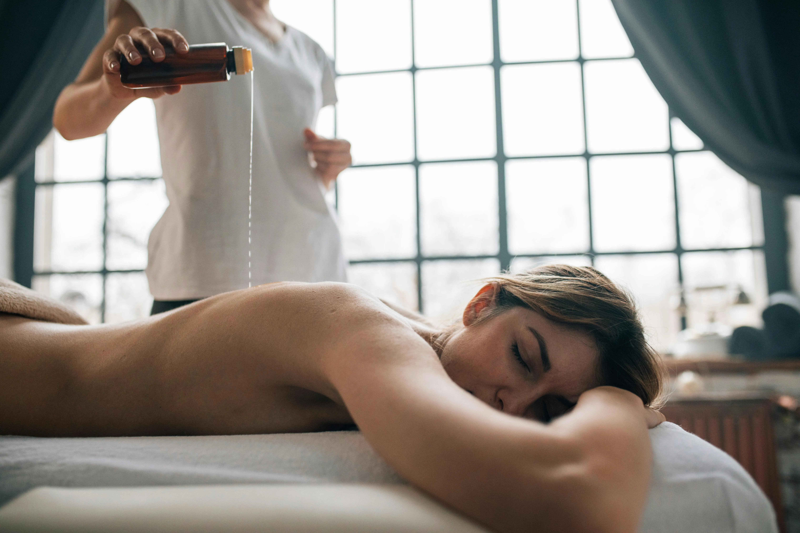
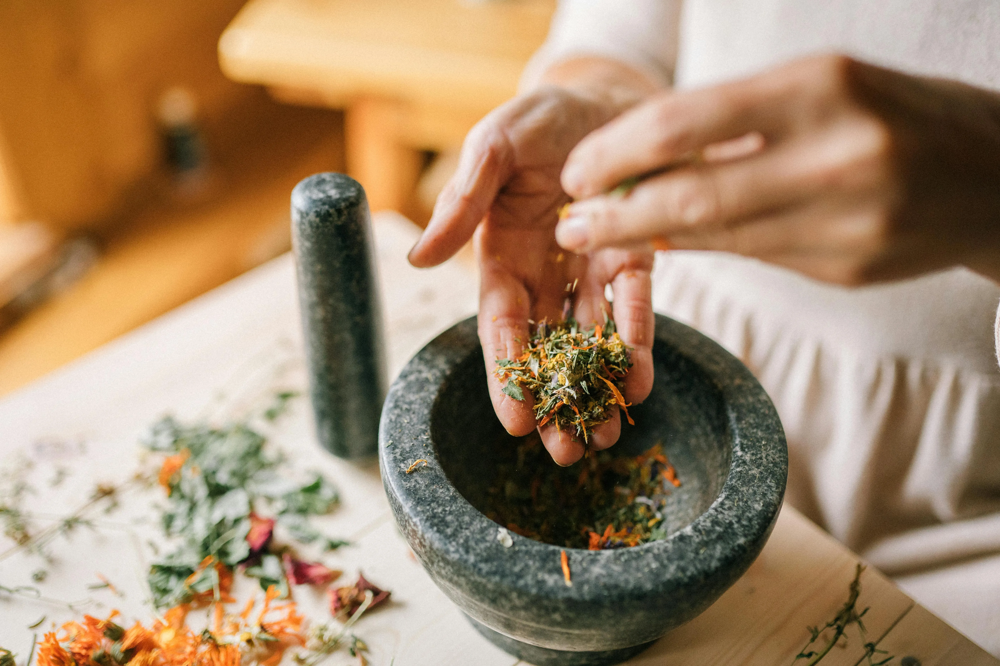
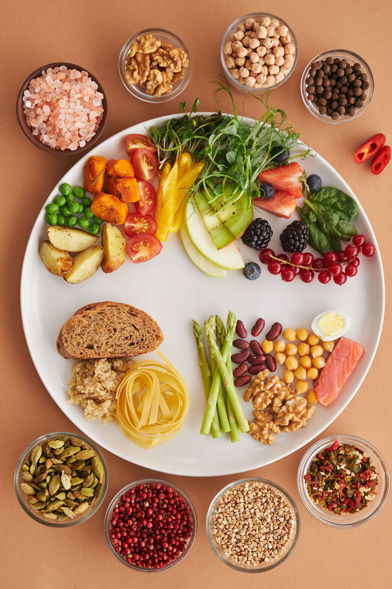
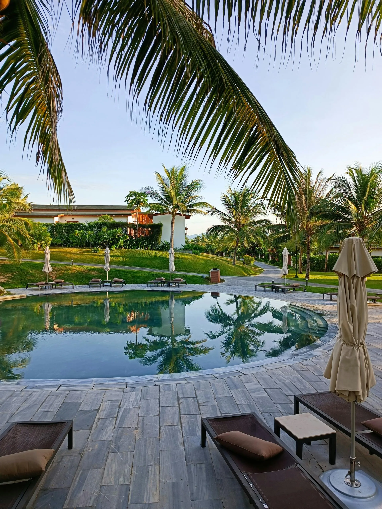

In the West, Ayurveda is often experienced as a weekend massage. At Nosh, we bring you to the birthplace of the science for authentic, clinical-grade Panchakarma. We focus on root-cause healing for chronic issues, total lifestyle upgrades, and sustainable dietary enhancement.

True healing cannot be rushed. Our authentic Panchakarma protocols follow the traditional timelines required to pull deep-seated toxins from your tissues.

Targeted emesis and nasal therapies to clear respiratory congestion, reset Kapha-based metabolic issues, and cure chronic migraines or sleep apnea.
Therapeutic purgation to flush the liver, cool systemic inflammation, and profoundly reset the digestive tract and Pitta imbalances.
Highly customized therapeutic enema protocols designed to treat severe joint pain, arthritis, nervous system burnout, and deep Vata imbalances.

The treatments happen in the clinic, but the healing happens in your daily life. A Nosh wellness journey includes a complete Dosha mapping.
You will learn exactly how to eat, move, and sleep for your specific body constitution so that you carry the healing back home to the US or UK. We provide the permanent blueprint for your new lifestyle.

Focus on Nasya or Vamana to clear immediate blockages and regulate the nervous system.
A full Virechana protocol combined with total dietary recalibration.
The maximum Basti protocol for profound chronic issue resolution and complete cellular turnover.
Kerala offers two primary avenues for clinical Ayurveda. We curate both based on your exact budget, medical needs, and desired level of luxury.
| Protocol Duration | Independent Clinic Physician (Treatments & Consults Only) |
Premium Ayurvedic Resort (All-Inclusive Luxury Stay & Meals) |
|---|---|---|
| 15-Day Detox Nasya, Vamana, or Virechana |
~$750 – $1,500 ~€700 – €1,400 |
~$3,000 – $6,000 ~€2,750 – €5,500 |
| 30-Day Deep Healing Extended Protocols + Diet Recalibration |
~$1,500 – $3,000 ~€1,400 – €2,750 |
~$6,000 – $12,000 ~€5,500 – €11,000 |
| 60-Day Rebirth Maximum Basti Protocol |
~$3,000 – $6,000 ~€2,750 – €5,500 |
~$12,000 – $24,000+ ~€11,000 – €22,000+ |
*Estimates reflect current market averages in Kerala. Final curation costs depend on seasonal availability, chosen property tier, and prescribed medical interventions.
Before you step onto a plane, let’s understand exactly what your body requires. Connect with our resident Ayurvedic Physician for a free 30-minute health history mapping and structural Dosha assessment to design your perfect treatment timeline.
Claim Your Complimentary 30-Min Call →Secure your session. Our team will send current open slots straight to your WhatsApp.